Modelo de Crédito Parcial
Estimación de umbrales del PCM
Los parámetros del PCM para el constructo Conclusiones muestran una organización ordinal adecuada de las categorías de respuesta. Como corresponde al modelo PCM, el parámetro de discriminación se mantiene fijo en a = 1 para todos los ítems, por lo que la interpretación se centra en los umbrales. En todos los reactivos, los umbrales se ordenan progresivamente (b1 < b2 < b3 < b4), lo que indica que las categorías de respuesta aumentan conforme se incrementa el nivel del rasgo latente. Los primeros umbrales (b1) se ubican en niveles muy bajos del continuo, especialmente en Item66 e Item67, lo que sugiere que el paso desde la categoría inicial hacia categorías superiores ocurre desde niveles bajos de habilidad. Los segundos umbrales (b2) se ubican entre niveles bajos y cercanos al centro de θ, mientras que los umbrales b3 y b4 se desplazan hacia niveles altos, indicando que las categorías superiores requieren niveles elevados del constructo Conclusiones. En conjunto, el PCM sugiere un funcionamiento ordinal coherente de los ítems, con buena cobertura desde niveles bajos hasta niveles altos del rasgo latente, aunque las categorías más altas parecen representar niveles más exigentes del constructo.
| a | b1 | b2 | b3 | b4 | Item |
|---|---|---|---|---|---|
| 1 | -4.535 | -0.223 | 3.069 | 5.610 | Item66 |
| 1 | -4.442 | -0.299 | 2.965 | 5.573 | Item67 |
| 1 | -3.307 | 0.684 | 3.710 | 6.205 | Item68 |
| 1 | -3.160 | 1.130 | 4.065 | 5.807 | Item69 |
| 1 | -3.588 | 0.920 | 3.958 | 6.126 | Item70 |
Las CCI del PCM para el constructo Conclusiones muestran un funcionamiento ordinal progresivo de las categorías de respuesta. En general, la categoría P1 predomina en niveles muy bajos de θ y disminuye conforme aumenta el rasgo latente; la categoría P2 alcanza su mayor probabilidad en niveles bajos o bajos-medios; la categoría P3 se ubica en niveles medios y medio-altos; mientras que las categorías P4 y P5 se activan principalmente en niveles altos del continuo. Este patrón indica que las categorías se organizan de manera coherente conforme aumenta la habilidad latente en Conclusiones. También se observa que los ítems 66 y 67 presentan umbrales iniciales más bajos, por lo que captan con mayor claridad niveles bajos del constructo, mientras que los ítems 68, 69 y 70 desplazan parte de sus categorías hacia niveles más altos. En conjunto, las curvas respaldan el funcionamiento ordinal de los ítems, aunque las categorías superiores representan niveles exigentes del constructo y parecen requerir niveles elevados de habilidad latente.
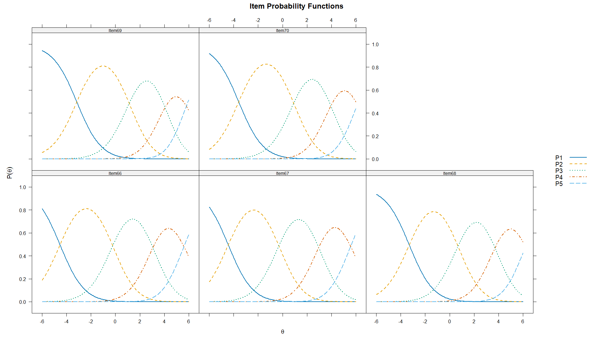
Retrotraducción factorial del PCM
La retrotraducción factorial del PCM para el constructo Conclusiones mostró comunalidades muy elevadas y homogéneas en todos los ítems (h² = .948). Esto indica que, bajo este modelo, una proporción alta de la varianza de cada reactivo es explicada por el factor latente. Sin embargo, este resultado debe interpretarse con cautela, ya que en el PCM el parámetro de discriminación se fija en a = 1 para todos los ítems, lo que puede producir valores homogéneos de carga o comunalidad. Por tanto, aunque la evidencia sugiere una relación fuerte de los reactivos con el constructo Conclusiones, conviene complementar esta interpretación con modelos más flexibles, como el GPCM o el GRM, donde las discriminaciones pueden variar entre ítems.
Modelo de Crédito Parcial Generalizado
Estimación de parámetros del GPCM
Los parámetros del GPCM para el constructo Conclusiones muestran discriminaciones diferenciadas y elevadas en todos los ítems (a = 3.217–6.081), lo que indica una alta capacidad de los reactivos para distinguir entre participantes con distintos niveles del rasgo latente. El ítem con mayor discriminación fue Item67 (a = 6.081), seguido por Item68 (a = 4.358), Item66 (a = 3.890), Item70 (a = 3.409) e Item69 (a = 3.217). Los umbrales se ordenan progresivamente en todos los reactivos (b1 < b2 < b3 < b4), lo que respalda el funcionamiento ordinal de las categorías de respuesta. En general, los primeros umbrales se ubican en niveles bajos del continuo, mientras que los umbrales superiores se desplazan hacia niveles medios y medio-altos de θ. Esto sugiere que los ítems cubren adecuadamente distintas zonas del constructo Conclusiones, desde niveles bajos hasta niveles altos, con categorías de respuesta bien diferenciadas. En conjunto, el GPCM evidencia un funcionamiento sólido de los reactivos, con alta discriminación y una estructura ordinal clara.
| a | b1 | b2 | b3 | b4 | Item |
|---|---|---|---|---|---|
| 3.890 | -1.484 | -0.065 | 0.997 | 1.920 | Item66 |
| 6.081 | -1.381 | -0.095 | 0.923 | 1.801 | Item67 |
| 4.358 | -1.044 | 0.225 | 1.195 | 2.182 | Item68 |
| 3.217 | -1.041 | 0.384 | 1.353 | 2.115 | Item69 |
| 3.409 | -1.175 | 0.310 | 1.309 | 2.240 | Item70 |
Las CCI del GPCM para el constructo Conclusiones muestran un funcionamiento ordinal claro de las categorías de respuesta. En todos los ítems, la categoría P1 predomina en niveles bajos de θ, mientras que las categorías P2, P3 y P4 se activan de manera secuencial conforme aumenta el rasgo latente. Finalmente, la categoría P5 alcanza mayor probabilidad en niveles altos del continuo. Las curvas son estrechas y pronunciadas, especialmente en el Item67, lo que coincide con su alta discriminación (a = 6.081) y sugiere una fuerte capacidad para diferenciar participantes con niveles cercanos de habilidad. Los ítems 66, 68, 69 y 70 también presentan curvas bien definidas y categorías progresivas, aunque con menor discriminación relativa que el Item67. En conjunto, las CCI respaldan un funcionamiento sólido de los ítems del constructo Conclusiones bajo el GPCM, con categorías ordenadas y alta capacidad discriminativa en niveles bajos, medios y medio-altos del rasgo latente.
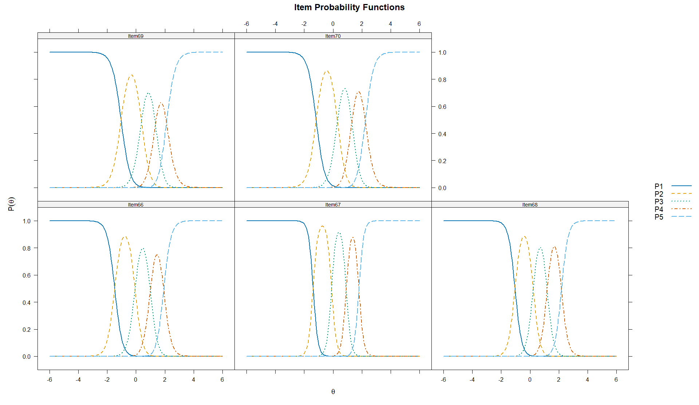
Retrotraducción factorial del Modelo GPCM
La retrotraducción factorial del GPCM para el constructo Conclusiones mostró cargas factoriales muy elevadas en todos los ítems (λ = .980–.994), así como comunalidades altas (h² = .961–.989). Esto indica que los reactivos se asocian fuertemente con el factor latente y que una proporción muy importante de su varianza es explicada por el constructo. El ítem con mayor asociación fue Item67 (λ = .994; h² = .989), seguido por Item68 (λ = .989; h² = .978), Item66 (λ = .986; h² = .973), Item70 (λ = .982; h² = .965) e Item69 (λ = .980; h² = .961). Además, la proporción de varianza explicada por el factor fue elevada (97.3%), lo que respalda una estructura altamente homogénea y predominantemente unidimensional para el constructo Conclusiones bajo el GPCM.
| Item | F1 | h2 |
|---|---|---|
| Item66 | 0.986 | 0.973 |
| Item67 | 0.994 | 0.989 |
| Item68 | 0.989 | 0.978 |
| Item69 | 0.980 | 0.961 |
| Item70 | 0.982 | 0.965 |
Modelo de Respuesta Graduada
Estimación de parámetros del GRM
Los parámetros del GRM para el constructo Conclusiones muestran discriminaciones elevadas en todos los ítems (a = 3.718–6.333), lo que indica una alta capacidad de los reactivos para diferenciar entre participantes con distintos niveles del rasgo latente. El ítem con mayor discriminación fue Item67 (a = 6.333), seguido por Item68 (a = 4.630), Item66 (a = 4.214), Item70 (a = 3.850) e Item69 (a = 3.718). Los umbrales se ordenaron progresivamente en todos los reactivos (b1 < b2 < b3 < b4), lo que respalda el funcionamiento ordinal de las categorías de respuesta. En general, los primeros umbrales se ubican en niveles bajos del continuo, mientras que los umbrales superiores se desplazan hacia niveles medios y medio-altos de θ. Esto sugiere que las categorías más altas requieren mayor habilidad latente en Conclusiones, pero se mantienen dentro de un rango interpretable del continuo. En conjunto, el GRM evidencia un funcionamiento sólido de los ítems, con alta discriminación y categorías claramente organizadas a lo largo del rasgo latente.
| a | b1 | b2 | b3 | b4 | Item |
|---|---|---|---|---|---|
| 4.214 | -1.460 | -0.075 | 0.991 | 1.974 | Item66 |
| 6.333 | -1.366 | -0.107 | 0.919 | 1.832 | Item67 |
| 4.630 | -1.038 | 0.200 | 1.194 | 2.230 | Item68 |
| 3.718 | -1.022 | 0.349 | 1.339 | 2.195 | Item69 |
| 3.850 | -1.157 | 0.267 | 1.284 | 2.297 | Item70 |
Las CCI del GRM para el constructo Conclusiones muestran un funcionamiento ordinal claro y altamente definido de las categorías de respuesta. En todos los ítems, la categoría P1 predomina en niveles bajos de θ y disminuye conforme aumenta el rasgo latente; las categorías P2, P3 y P4 se activan de manera secuencial en zonas bajas-medias, medias y medio-altas; y la categoría P5 alcanza mayor probabilidad en niveles altos del continuo. Las curvas son pronunciadas y bien separadas, lo que coincide con los altos parámetros de discriminación observados en los ítems. Destaca especialmente el Item67, cuyas curvas son más estrechas y definidas, consistente con su mayor discriminación (a = 6.333). Los ítems 66, 68, 69 y 70 también presentan un patrón funcional adecuado, aunque con menor discriminación relativa. En conjunto, las CCI respaldan un funcionamiento sólido del constructo Conclusiones bajo el GRM, con categorías progresivas, alta discriminación y buena representación del continuo latente.
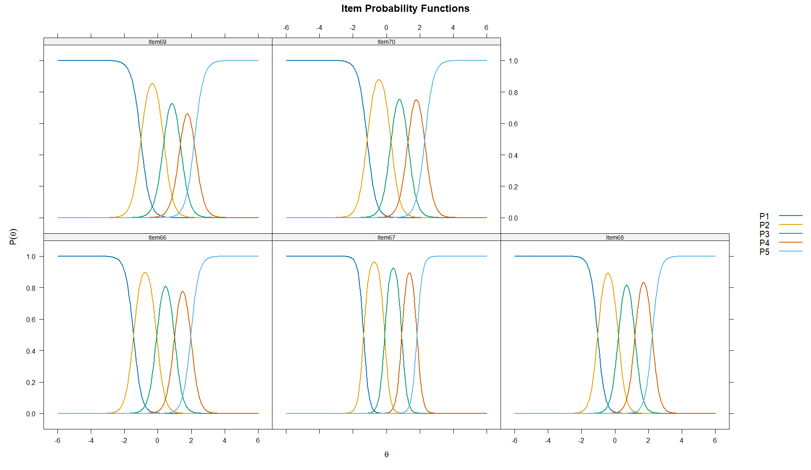
Retrotraducción factorial del GRM
La retrotraducción factorial del GRM para el constructo Conclusiones mostró cargas factoriales elevadas en todos los ítems (λ = .909–.966), así como comunalidades altas (h² = .827–.933). Esto indica que los reactivos se asocian de manera consistente con el factor latente y que una proporción importante de su varianza es explicada por el constructo. El ítem con mayor carga fue Item67 (λ = .966; h² = .933), seguido por Item68 (λ = .939; h² = .881), Item66 (λ = .927; h² = .860), Item70 (λ = .915; h² = .836) e Item69 (λ = .909; h² = .827). Además, la proporción de varianza explicada por el factor fue elevada (86.7%), lo que respalda una estructura predominantemente unidimensional para el constructo Conclusiones bajo el GRM.
| Item | F1 | h2 |
|---|---|---|
| Item66 | 0.927 | 0.860 |
| Item67 | 0.966 | 0.933 |
| Item68 | 0.939 | 0.881 |
| Item69 | 0.909 | 0.827 |
| Item70 | 0.915 | 0.836 |
Unidimensionalidad del constructo mediante AFC
La unidimensionalidad del constructo Conclusiones se evaluó inicialmente primeramente mediante AFC ordinal con estimador DWLS. En primer lugar, el SRMR = .021 fue muy bajo y claramente inferior al punto de referencia convencional de .08, lo que indica una discrepancia residual mínima entre la matriz observada y la matriz reproducida por el modelo. Desde esta perspectiva, el resultado aporta evidencia fuerte de unidimensionalidad esencial. Además, los índices incrementales fueron elevados, tanto en su versión escalada (CFI = .996; TLI = .992) como en la versión robusta (CFI = .965; TLI = .931), lo que respalda el ajuste comparativo del modelo unifactorial. Las cargas factoriales estandarizadas también fueron altas en todos los ítems (λ = .893–.963), destacando especialmente el Item67 (λ = .963), lo que muestra una fuerte asociación de los reactivos con el factor latente Conclusiones. Aunque el RMSEA fue elevado en sus distintas versiones, este índice puede ser sensible en modelos con pocos grados de libertad. En conjunto, considerando principalmente el SRMR, los índices incrementales y las cargas factoriales, los resultados respaldan una estructura predominantemente unidimensional para el constructo Conclusiones. Los índices de modificación no aportan sugerencias relevantes de asociación.
Por otra parte, Los índices de ajuste TRI para el constructo Conclusiones muestran que los modelos flexibles presentan mejor desempeño que el PCM. El PCM obtuvo el peor ajuste residual (SRMSR = .125) y los criterios de información más altos, lo que indica que restringir la discriminación de todos los ítems a un mismo valor no representa óptimamente los datos. En cambio, el GPCM y el GRM mostraron un ajuste residual adecuado (SRMSR = .028 en ambos casos), así como índices incrementales aceptables-altos (CFI = .979; TLI ≈ .958–.959). Aunque el RMSEA fue elevado en los tres modelos, este resultado debe interpretarse junto con el SRMSR, los índices incrementales y los criterios de información. La comparación entre PCM y GPCM fue significativa (X² = 211.334, gl = 4, p < .001), lo que respalda la mejora al permitir discriminaciones diferenciadas. Finalmente, el GRM presentó los valores más bajos de AIC, SABIC y BIC, además del mayor LogLik, por lo que se considera el modelo con mejor ajuste relativo para el constructo Conclusiones.
| Modelo | M2 | gl | p | RMSEA | IC 95% RMSEA | SRMSR | TLI | CFI | AIC | SABIC | BIC | LogLik |
|---|---|---|---|---|---|---|---|---|---|---|---|---|
| PCM | 192.500 | 9 | .000 | .168 | [.148, .189] | .125 | .952 | .957 | 6672.430 | 6701.972 | 6768.653 | -3315.215 |
| GPCM | 91.686 | 5 | .000 | .155 | [.128, .184] | .028 | .959 | .979 | 6469.097 | 6504.265 | 6583.647 | -3209.548 |
| GRM | 92.984 | 5 | .000 | .156 | [.129, .185] | .028 | .958 | .979 | 6413.614 | 6448.783 | 6528.165 | -3181.807 |
Independencia local del modelo GRM
La independencia local del modelo GRM para el constructo Conclusiones se evaluó mediante el índice LD de Chen y Thissen y el estadístico Q3 de Yen. En el análisis LD, varios pares presentaron significancia estadística; sin embargo, la interpretación se centró en las correlaciones residuales estandarizadas reportadas por mirt como coeficientes V de Cramer con signo. Tomando como referencia los criterios de Cohen, valores menores a .30 en valor absoluto pueden considerarse pequeños. Bajo este criterio, la mayoría de las asociaciones residuales fueron bajas, con excepción de Item66–Item70 (r = -.512) e Item67–Item70 (r = -.919), que mostraron magnitudes elevadas y sugieren dependencia residual específica, especialmente alrededor del Item70.
Por su parte, el índice Q3 mostró asociaciones residuales de magnitud baja a moderada. Los pares con mayor magnitud fueron Item67–Item69 (Q3 = -.423), Item67–Item70 (Q3 = -.390), Item66–Item68 (Q3 = -.347), Item67–Item68 (Q3 = -.307), Item66–Item70 (Q3 = -.284) e Item66–Item69 (Q3 = -.241). Varios de estos valores superan el punto de referencia aproximado de |Q3| > .2236, lo que sugiere asociaciones residuales puntuales entre algunos reactivos. En conjunto, los resultados indican que la independencia local no se cumple plenamente en todos los pares; sin embargo, la dependencia parece concentrarse en relaciones específicas, particularmente entre Item67–Item70 y Item66–Item70, más que reflejar un problema generalizado del constructo Conclusiones. Estos hallazgos deben interpretarse como señales de posible contenido compartido, redundancia o subcomponentes internos, no como criterio automático de eliminación de ítems.
Ajuste al ítem del modelo GRM
El ajuste al ítem del modelo GRM para el constructo Conclusiones mostró un funcionamiento generalmente aceptable, aunque con señales puntuales de revisión. Los valores de infit oscilaron entre .713 y .898, mientras que los valores de outfit se ubicaron entre .574 y .824. La mayoría de estos valores se encuentra en un rango interpretable, aunque el Item67 presentó los valores más bajos de infit (.713) y outfit (.574), lo que sugiere un patrón de respuesta más predecible o menos variable de lo esperado por el modelo. En cuanto al estadístico S_X2, los ítems 66, 68, 69 y 70 resultaron significativos; sin embargo, sus valores de RMSEA.S_X2 fueron bajos (.037–.049), lo que indica que las discrepancias son de magnitud limitada. Por su parte, X2* fue significativo en todos los ítems, especialmente en Item70, pero esta evidencia debe interpretarse junto con los índices de magnitud y los valores de infit/outfit. En conjunto, los resultados sugieren que los ítems del constructo Conclusiones presentan un ajuste aceptable al GRM, con mayor atención diagnóstica en Item67 e Item70, pero sin evidencia suficiente para justificar la eliminación automática de reactivos.
| item | Zh | outfit | z.outfit | infit | z.infit | S_X2 | df.S_X2 | RMSEA.S_X2 | p.S_X2 | X2_star | p.X2_star |
|---|---|---|---|---|---|---|---|---|---|---|---|
| Item66 | 2.498 | 0.790 | -2.929 | 0.867 | -2.105 | 35.787 | 15 | 0.044 | 0.002 | 110.369 | 0.0042 |
| Item67 | 3.825 | 0.574 | -3.542 | 0.713 | -4.302 | 11.397 | 7 | 0.030 | 0.122 | 12.902 | 0.0406 |
| Item68 | 3.140 | 0.727 | -2.759 | 0.801 | -3.405 | 28.819 | 11 | 0.047 | 0.002 | 61.701 | 0.0102 |
| Item69 | 2.557 | 0.824 | -2.203 | 0.866 | -2.244 | 23.908 | 12 | 0.037 | 0.021 | 60.292 | 0.0154 |
| Item70 | 2.375 | 0.783 | -2.887 | 0.898 | -1.683 | 30.391 | 11 | 0.049 | 0.001 | 839.821 | 2.00E-04 |
Los gráficos empíricos de los ítems 66 al 70 muestran un ajuste visual generalmente adecuado entre las curvas estimadas por el GRM y las proporciones observadas. En todos los reactivos se aprecia un patrón ordinal coherente: la categoría 1 predomina en niveles bajos de θ y disminuye conforme aumenta el rasgo latente; las categorías intermedias presentan picos definidos en zonas sucesivas del continuo; y las categorías superiores, especialmente la categoría 5, se activan principalmente en niveles altos de θ. Los puntos empíricos se ubican, en términos generales, cerca de las curvas teóricas, lo que sugiere que el modelo reproduce razonablemente el comportamiento de respuesta de los participantes. No obstante, se observan algunas discrepancias puntuales en categorías intermedias y superiores, especialmente en ciertos puntos que se alejan de la curva esperada, lo cual es consistente con las señales de revisión detectadas en los índices cuantitativos de ajuste al ítem. En conjunto, la evidencia visual respalda un ajuste empírico aceptable de los ítems del constructo Conclusiones al modelo GRM, sin evidencia clara de inversión de categorías o mal funcionamiento generalizado.
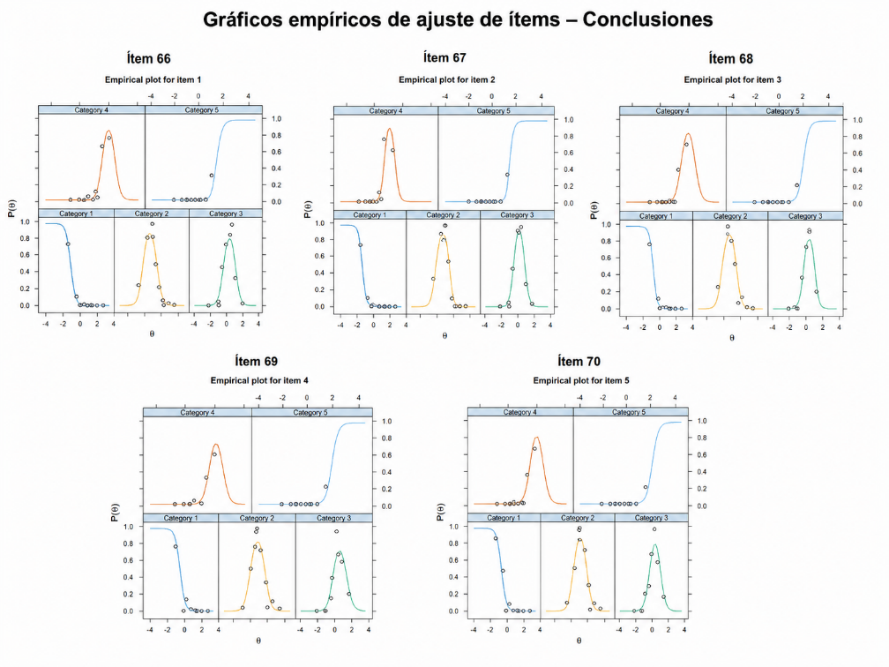
Ajuste por persona
El ajuste a la persona del modelo GRM para el constructo Conclusiones mostró algunos casos con patrones de respuesta atípicos, reflejados en valores elevados de outfit, infit y estadísticos Zh negativos. Los casos con mayor desajuste presentaron combinaciones poco esperadas de respuestas bajas en algunos ítems y respuestas altas en otros; por ejemplo, participantes que seleccionaron categorías altas en determinados reactivos, pero categorías bajas en otros ítems del mismo constructo. Este comportamiento no debe interpretarse automáticamente como error, falta de atención o invalidez de la respuesta. En el constructo Conclusiones, es posible que los estudiantes dominen algunos componentes específicos, como reconocer la importancia de cerrar un trabajo de investigación, formular conclusiones generales o sintetizar hallazgos, pero no necesariamente otros elementos más complejos, como integrar implicaciones, limitaciones o aportes derivados de los resultados. Por tanto, el desajuste a la persona debe entenderse como una señal diagnóstica de heterogeneidad en los perfiles de conocimiento, más que como un criterio directo de exclusión de casos. En conjunto, los resultados sugieren que algunos participantes presentan trayectorias diferenciadas dentro del constructo Conclusiones, posiblemente asociadas con aprendizajes parciales, dominio desigual de contenidos o experiencias formativas heterogéneas.
Curva de información del ítem (IIF)
La curva de información del ítem para el constructo Conclusiones muestra que los reactivos aportan mayor precisión en una zona relativamente concentrada del continuo, aproximadamente entre θ = -1.8 y θ = 2.5. El Item67 destaca claramente como el reactivo más informativo, lo cual es congruente con su alto parámetro de discriminación (a1 = 6.333); sus picos estrechos y elevados indican una gran capacidad para diferenciar participantes con niveles cercanos del rasgo latente. También aportan información importante los ítems 68 (a1 = 4.630) y 66 (a1 = 4.214), seguidos por Item70 (a1 = 3.850) e Item69 (a1 = 3.718), que aunque tienen menor discriminación relativa, mantienen una contribución adecuada al modelo. En general, los picos de información se concentran en niveles bajos-medios, medios y medio-altos de θ, mientras que la información disminuye en los extremos del continuo, especialmente por debajo de θ = -2.5 y por encima de θ = 3.5. En conjunto, los resultados indican que los ítems del constructo Conclusiones son altamente informativos para estimar niveles centrales y medio-altos del rasgo latente, con menor precisión para perfiles extremadamente bajos o altos.
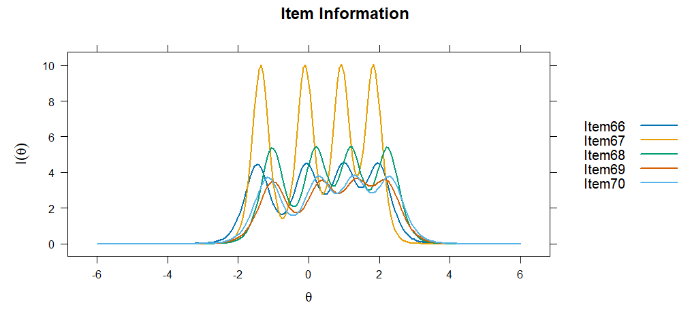
Curva de información del test (TIF) y Curva de error estándar (SEC)
La curva de información total del test (TIF) para el constructo Conclusiones muestra que el modelo ofrece mayor precisión de medición aproximadamente entre θ = -1.7 y θ = 2.5, con varios picos de información en niveles bajos-medios, medios y medio-altos del rasgo latente. En esta zona, la información del test se mantiene elevada, lo que indica que el conjunto de ítems discrimina con mayor precisión entre participantes con niveles cercanos de habilidad en Conclusiones. De forma complementaria, el error estándar de medición (SEC/SE) se mantiene bajo en ese mismo intervalo, lo que sugiere estimaciónes más estables y confiables de las puntuaciones latentes. En contraste, la información disminuye de manera marcada en los extremos del continuo, especialmente por debajo de θ = -2.5 y por encima de θ = 3.5, donde el error estándar aumenta considerablemente. En conjunto, la TIF y la SEC indican que la escala mide con alta precisión los niveles bajos-medios, medios y medio-altos del constructo Conclusiones, pero con menor precisión para perfiles extremadamente bajos o extremadamente altos.
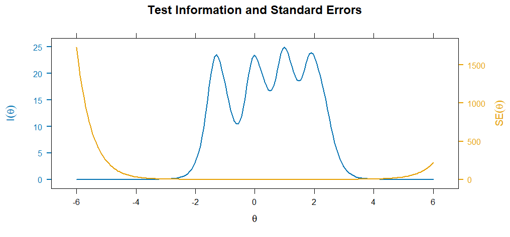
Estimación referencial de habilidades latentes
Una vez calibrado el modelo GRM del constructo Conclusiones, se estimaron de manera referencial las habilidades latentes de los participantes mediante el método EAP. Para fines descriptivos, las puntuaciones se clasificaron mediante un baremo teórico de la escala θ: muy bajo (θ < -2), básico (-2 ≤ θ < -1), intermedio bajo (-1 ≤ θ < -0.5), intermedio (-0.5 ≤ θ ≤ 0.5), intermedio alto (0.5 < θ ≤ 1), bueno (1 < θ ≤ 1.5) y avanzado (θ > 1.5). Esta clasificación debe interpretarse como una aproximación descriptiva del modelo calibrado, no como una clasificación diagnóstica definitiva. Las habilidades latentes estimadas se distribuyeron alrededor del centro de la escala θ, con una media cercana a cero (M = 0.001) y una dispersión próxima a una unidad estándar (DE = 0.969). El error estándar promedio fue moderado-bajo (M_SE = 0.245), lo que sugiere una precisión adecuada en la estimación de las puntuaciones latentes. En términos descriptivos, la mayor proporción de participantes se ubicó en los niveles intermedio bajo e intermedio (25.6% en cada uno), seguida del nivel intermedio alto (18.0%). Una proporción menor se concentró en los niveles bueno (9.4%), básico (8.9%), avanzado (6.9%) y muy bajo (5.5%). En conjunto, los resultados sugieren que el modelo organiza principalmente a los participantes en niveles intermedios del constructo Conclusiones, con menor presencia de perfiles extremos.
| n | Media θ | DE θ | Mínimo θ | Máximo θ | Media SE | Muy bajo | Básico | Intermedio bajo | Intermedio | Intermedio alto | Bueno | Avanzado |
|---|---|---|---|---|---|---|---|---|---|---|---|---|
| 722 | 0.001 | 0.969 | -2.00 | 2.74 | 0.245 | 405.5% | 648.9% | 18525.6% | 18525.6% | 13018.0% | 689.4% | 506.9% |
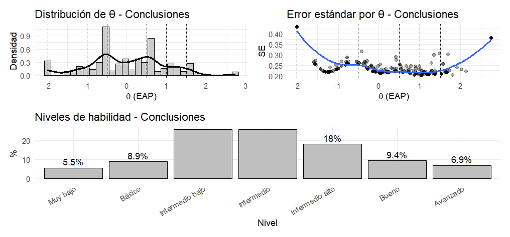
El histograma de las puntuaciones EAP del constructo Conclusiones muestra una distribución concentrada principalmente en la zona central del continuo latente. La mayor parte de los participantes se ubica entre aproximadamente θ = -1.0 y θ = 1.5, lo que coincide con la clasificación previa, donde predominaron los niveles intermedio bajo, intermedio e intermedio alto. También se observa presencia de casos en niveles bajos y altos, aunque con menor frecuencia, lo que indica que los perfiles extremos son menos comunes en la muestra. La distribución no parece completamente simétrica, ya que muestra cierta concentración en valores cercanos a θ = -0.5 y otra agrupación hacia valores positivos, especialmente alrededor de θ = 0.5 a 1.0. En términos interpretativos, el gráfico confirma que las puntuaciones EAP permiten observar la distribución empírica real de las habilidades estimadas, mientras que los niveles teóricos funcionan como una clasificación referencial para comunicar los resultados. Por tanto, las categorías deben entenderse como una guía descriptiva y no como grupos naturales o diagnósticos definitivos.
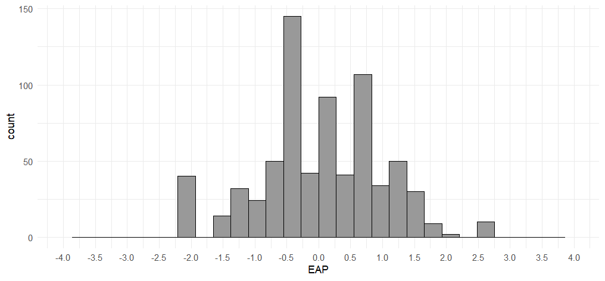
Distribución posterior del rasgo latente
La distribución posterior del rasgo latente para el constructo Conclusiones muestra una concentración principal alrededor de la zona central de la escala θ, especialmente entre valores aproximados de θ = -1.5 y θ = 1.5. La curva presenta mayor densidad cerca de θ = 0, aunque con una forma ligeramente irregular o con pequeños picos cercanos al centro, lo cual es coherente con la distribución empírica de las puntuaciones EAP, donde los participantes se agruparon principalmente en niveles intermedio bajo, intermedio e intermedio alto. La densidad disminuye hacia los extremos, lo que indica menor presencia de participantes con niveles muy bajos o muy altos del rasgo latente. También se observa una ligera extensión hacia valores positivos, lo que sugiere la existencia de algunos participantes con niveles buenos o avanzados en Conclusiones, aunque sin conformar un grupo claramente separado. En conjunto, la distribución posterior respalda que el modelo GRM organiza principalmente a los estudiantes en niveles centrales del constructo Conclusiones, con menor representación de perfiles extremos.
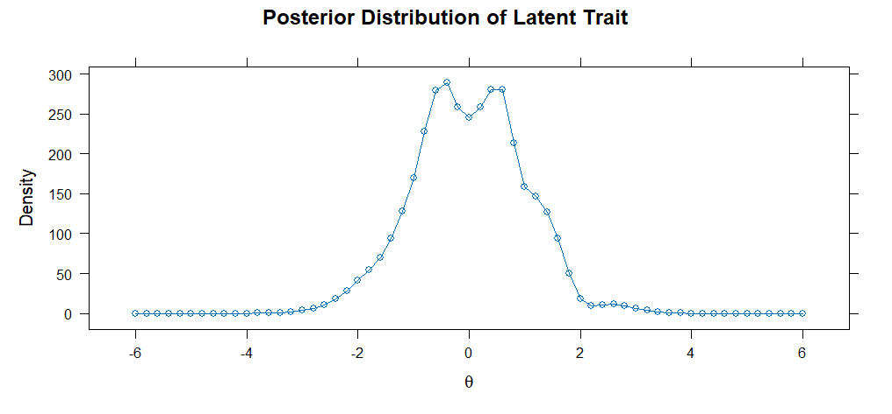
Evaluación del ajuste persona-ítem mediante Wright Map
El Wright Map del constructo Conclusiones muestra una correspondencia razonable entre la distribución de los participantes y la localización de los umbrales de los ítems. La mayor parte de los estudiantes se concentra en la zona central del continuo, aproximadamente entre θ = -1 y θ = 1, mientras que los umbrales se ordenan progresivamente desde niveles bajos (b1) hasta niveles medio-altos (b4). Esto indica que las categorías de respuesta funcionan de manera ordinal y que los ítems cubren principalmente los niveles bajos-medios, medios y medio-altos del constructo. Los umbrales superiores requieren niveles más elevados de habilidad latente, por lo que las categorías más altas representan niveles más exigentes de Conclusiones. En conjunto, el mapa sugiere buena cobertura en la zona central del rasgo, aunque menor precisión relativa para perfiles extremos.
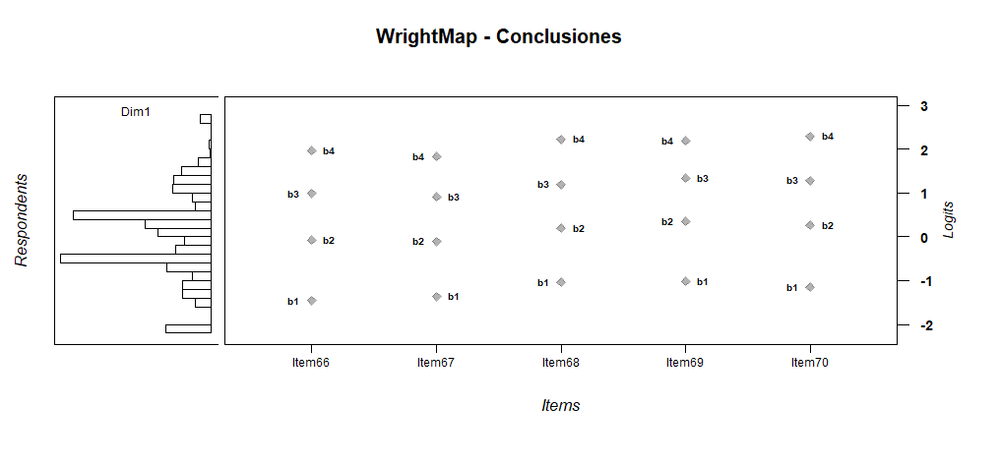
Fiabilidad
La fiabilidad marginal del modelo GRM para el constructo Conclusiones fue elevada (rxx = .933), lo que indica una alta precisión global en la estimación de las habilidades latentes. La curva de fiabilidad muestra que la precisión se mantiene alta principalmente entre θ = -2 y θ = 3, zona donde el conjunto de ítems aporta mayor información y permite estimaciónes más estables. En cambio, la fiabilidad disminuye de forma marcada en los extremos del continuo, especialmente por debajo de θ = -3 y por encima de θ = 4, lo cual es esperable debido a la menor información disponible en esos rangos. En conjunto, estos resultados indican que el constructo Conclusiones presenta una fiabilidad adecuada para interpretar puntuaciones latentes en niveles bajos-medios, medios y medio-altos, aunque con menor precisión para perfiles extremadamente bajos o altos.
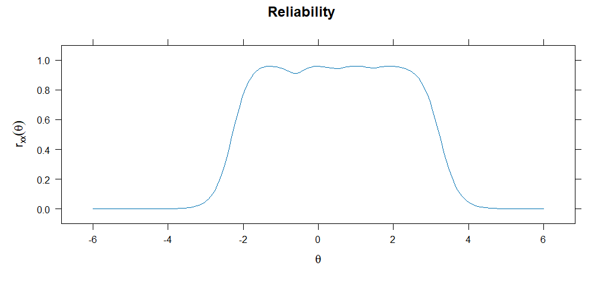